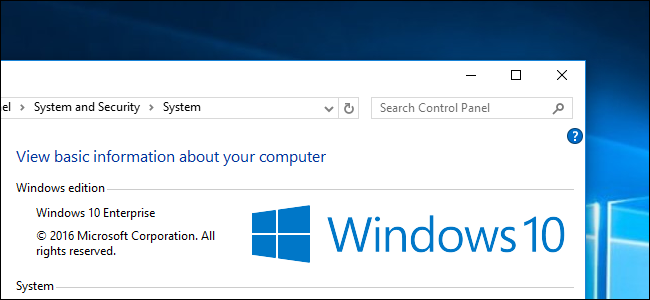
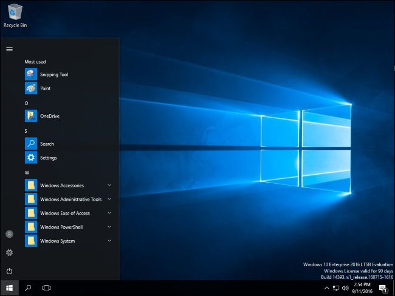
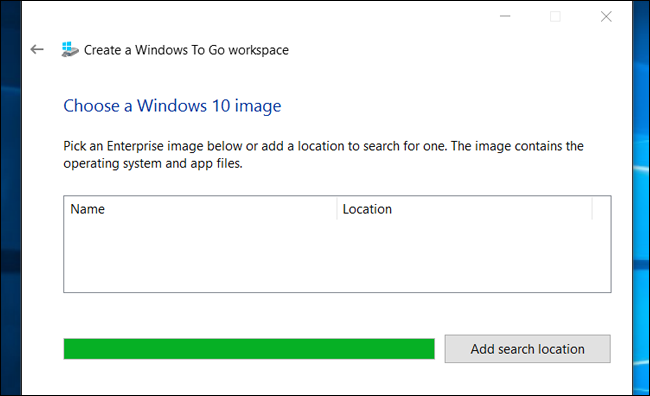
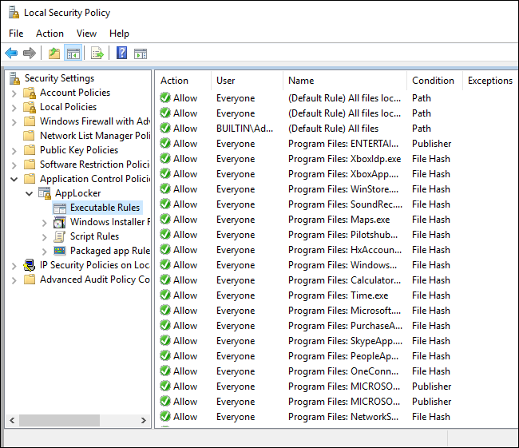
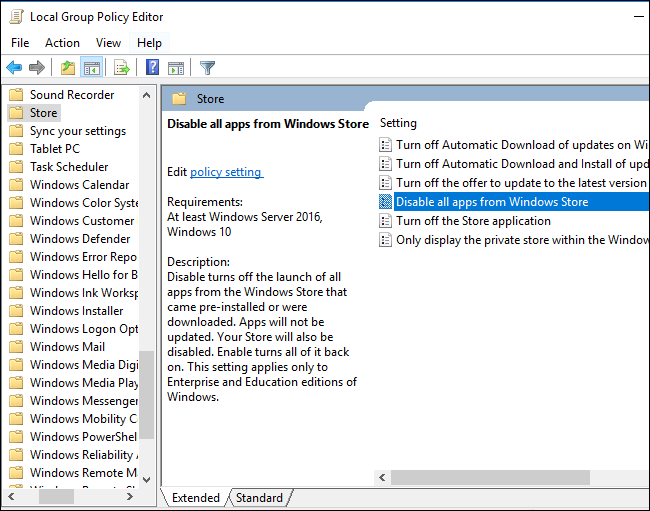
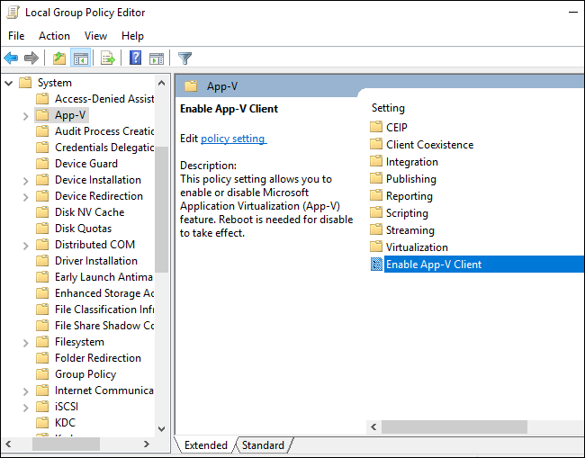
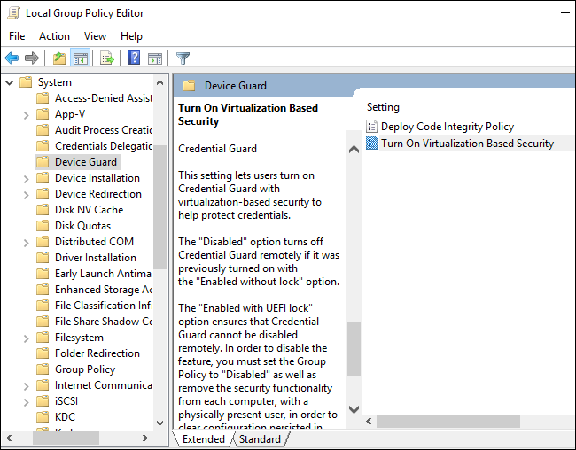
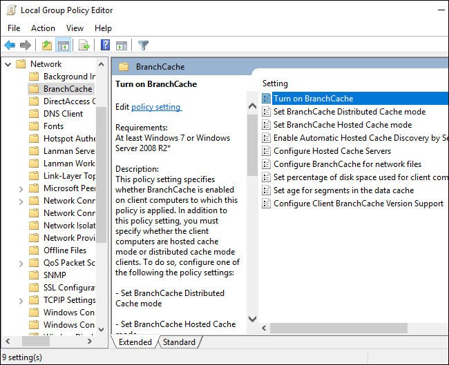

How-To Geek
10 Features Only Available in Windows 10 Enterprise (and Education)

You can upgrade to the Professional edition of Windows 10 to get advanced features like BitLocker encryption, but many features aren’t available to normal Windows users. Some only exist in the Enterprise and Education editions of Windows, which require a volume-licensing agreement or monthly subscription fee.
In Windows 7 and Vista, these Enterprise features were also available in the pricey Ultimate editions of Windows. There’s no Ultimate edition of Windows 10, but you can download a 90-day evaluation copy of Windows 10 Enterprise or upgrade any PC to Windows 10 Enterprise for evaluation purposes.
![]()
Long Term Servicing Branch
Windows 10 has several different branches. At the most unstable, there are the Windows Insider preview builds, which are prerelease versions of Windows 10 in active development. Most Windows 10 PCs are on the “Current Branch”, which is considered the stable version of Windows 10.
![]()
PCs running Windows 10 Professional can instead use the “Current Branch for Business” by enabling the “Defer Upgrades” option. This allows business PCs to put off upgrades for longer–the Windows 10 Anniversary Update hasn’t even begun rolling out to Current Branch for Business PCs yet, for example. It’ll be further tested and refined in the “Current Branch” on consumer PCs before it’s sent out to the “Current Branch for Business” on business PCs.
If you’re using the Enterprise or Education editions of Windows 10, you can opt for the “Long-Term Servicing Branch”, or LTSB. This is an even slower-moving version of Windows 10 intended for critical machinery, like ATMs in banks, point-of-sale systems, and computers operating machinery on a factory floor. The LTSB version of Windows 10 will receive no new features, but will be supported with updates for a long time. It’s provided as a separate image and doesn’t include new features like Microsoft Edge, Cortana, or the Windows Store.

If you want a stable version of Windows 10 that’s rock solid and isn’t constantly getting new feature updates–one that doesn’t even come with Cortana and the Windows Store–this is the version of Windows 10 to use. Unfortunately, you can’t get it as a normal Windows user. It’s only for the enterprise.
Windows To Go
Windows To Go was introduced in Windows 8, but it was limited to Windows 8 Enterprise. Sadly, that hasn’t changed in Windows 10. It allows you to install Windows onto a USB flash drive or external hard drive, which you can plug into any computer and boot from. You get a live Windows operating system running from a USB drive, and your files and settings are saved back to that drive. You can boot this copy of Windows on any computer, taking your operating system with you in your pocket. This is basically how a Linux live USB drive works–but for Windows.
Technically, you can launch the Windows To Go creator on any edition of Windows–but Windows will request an Enterprise image to install on your USB drive.

This is a great feature that could be useful to many computer geeks and even normal users who now rely on Linux live USB environments. However, Microsoft is targeting this feature at IT departments. It’s positioning Windows To Go as a way to get a managed Windows 10 system on any computer.
AppLocker
![]()
AppLocker is the kind of security feature that could make a huge difference in the real world. AppLocker allows you to set rules for which user accounts can run which programs. You just set up a whitelist, ensuring a user account on your computer can only run a handful of safe applications.
Confusingly, the Professional edition of Windows 10 will allow you to create AppLocker rules using the Local Security Policy editor. However, these rules won’t be enforced unless you’re using an Enterprise or Education edition of Windows, so rules you create on a Windows 10 Professional PC won’t do anything unless you upgrade. This feature is was also found on Windows 7 and 8. On Windows 7, you could get it as part of the Ultimate edition.

This would be a great way to secure a Windows computer used by your kids or relatives–give them access to the applications they need and block everything else. We’ve successfully used the Family Safety feature to implement application whitelisting on other editions of Windows, although it’s a bit awkward to use. It also relies on the metaphor of “child” and “parent” accounts. If you’re the child trying to protect your parents’ computer, it may be a bit awkward to explain.
Various Group Policy Settings
It’s impossible to list the differences without noting the changes to the Group Policy Editor. Windows 10 Professional has the Group Policy editor tool, and Windows users have traditionally been able to set most group policy settings on the Professional edition of Windows, just as they could on Enterprise editions of Windows.
In Windows 10’s Anniversary Update, though, Microsoft began to restrict certain group policy settings to Windows 10 Enterprise and Education. The following group policy settings have been restricted to Enterprise and Education editions of Windows 10. The associated registry settings won’t work anymore, either:
- Turn off Microsoft consumer experiences: This policy disables the downloading of third-party apps when you set up a new account. This is the feature that installs “Candy Crush Saga” and other such apps when you set up a new user account or PC. You can still uninstall these apps afterwards, though.
- Do not show Windows Tips: This policy disables the “Windows tips” system-wide. Users can still disable tips from Settings > System > Notifications & actions > Get tips, tricks, and suggestions as you use Windows.
- Do not display the Lock Screen: This policy disables the lock screen. There’s still a way to bypass the lock screen, but it’s a dirty hack and Microsoft may block it in the future.
- Disable all apps from Windows Store: This policy disables access to the Windows Store and blocks Store apps from running entirely. Windows 10 Professional users can no longer disable the Store.
This change pushes businesses towards Windows 10 Enterprise instead of Windows 10 Professional if they want to centrally manage policies like these on their networks.

App-V and UE-V
Microsoft Application Virtualization (App-V) and User Environment Virtualization (UE-V) were previously a separate download for the Enterprise and Education editions of Windows 10. With the Anniversary Update, they’re not integrated directly into these editions of Windows 10 with no additional downloads.
Application Virtualization (App-V) allows system administrators to isolate applications in containers. The App-V client then allows Windows 10 to run those applications in a self-contained virtual environment without a normal installation process. It also allows apps to be “streamed” to a Windows client PC from a server. It has security benefits, and it also enables organizations to better manage access to specific applications. It’s really only useful to larger organizations.
User Environment Virtualization (UE-V) allows users to save their application settings and Windows operating system settings to a virtual environment that follows them as they move between different PCs. As with App-V, this is really only useful to organizations that want to centrally manage their infrastructure. UE-V allows the system state to follow users as they move between different PCs managed by that organization.

Device Guard and Credential Guard
Device Guard and Credential guard are separate, but related, features. They’re both new in Windows 10.
Device Guard is designed to help secure an organization’s computers. As Microsoft’s Device Guard documentation puts it: “Device Guard on Windows 10 Enterprise changes from a mode where apps are trusted unless blocked by an antivirus or other security solution, to a mode where the operating system trusts only apps authorized by your enterprise. You designate these trusted apps by creating code integrity policies.” Device Guard uses hardware features like Intel VT-x and AMD-V virtualization extensions to harden a computer against attack and ensure only approved code can run. But enterprises have to configure exactly which code is approved.
Credential Guard uses virtualization-based features to isolate “secrets”, such as user account and network login credentials, on the PC so they can only be read by system software. Microsoft notes that you should also use other security techniques, such as Device Guard, to protect your data.

DirectAccess
DirectAccess is a VPN-like feature. Traditional VPN connections have to be initiated manually by the user. DirectAccess is designed to connect automatically every time a user connects to the Internet. A corporation can ensure laptops it distributes will always attempt to connect directly to their network, tunneling their Internet activity through an encrypted connection.
Branch Cache
BranchCache is a feature designed for organizations that have multiple “branches” in different locations. For example, the main office might hold a server with useful data a branch office needs to access. Rather than access this data over the WAN (Internet) connection all day, BranchCache can create and maintain a local cache of the data. This speeds things up and reduces Internet connection usage. BranchCache can operate in “Distributed Cache” mode where its cache is stored across the computers in the branch office, or “Hosted Cache” mode where the cache is hosted on a server in the branch office.

Some features that were restricted to Windows 8 Enterprise are now available in Windows 10 Professional. For example, Services for Network File System (NFS) allow Windows 10 Pro users to connect to UNIX NFS network file shares. RemoteFX virtualization features allow you to use a virtual GPU in a Hyper-V virtual machine, and are also now now part of the Professional edition. And, the old Subsystem for Unix-based Applications has also been replaced by the new “Bash on Ubuntu on Windows” shell, which is available on all versions of Windows 10, including Home.
![]()
![]()
![]()
![]()
![]()
![]()
![]()
![]()
![]()

Windows-to-go is also available in Pro. Subject to same conditions as in Enterprise. It's in old control panel.
Read the article; we said that. The tool is available in Pro, but it will only accept an Enterprise image. So you can't use it unless you have a copy of Enterprise.